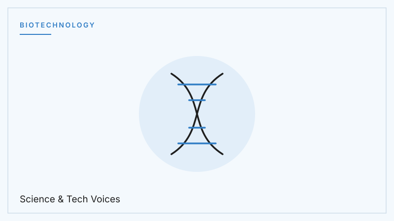
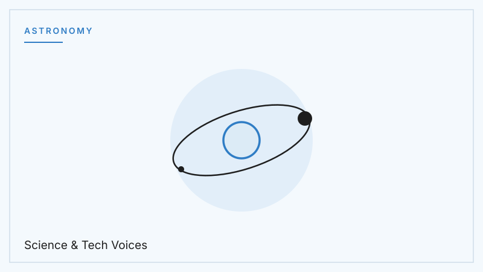
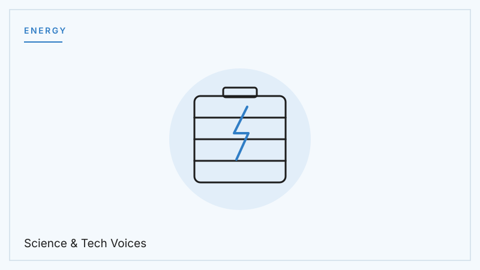
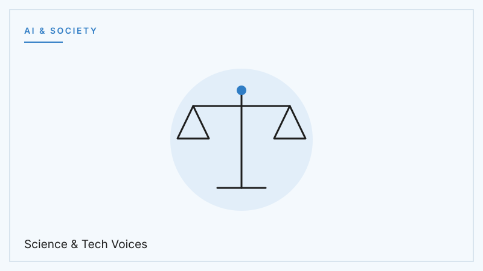

AI & Society
Large Language Models: How Machines Learned Our Language
The systems behind modern chatbots are changing how we search, write, and learn. Here is how they actually work — and where their limits are.
From quantum computers to gene editing, Science & Tech Voices breaks down the discoveries shaping our future — in plain language, for curious minds everywhere.
Latest Writing
Every article researched and written by Kerem Tüzün.
The systems behind modern chatbots are changing how we search, write, and learn. Here is how they actually work — and where their limits are.

A bacterial immune system became the most powerful gene-editing tool ever discovered. Medicine may never be the same.

We now know of thousands of planets orbiting other stars. The next question is the biggest one science has ever asked: is anyone home?

The battery in your phone has barely changed in 30 years. The next leap — replacing liquid with solid — could change everything that runs on electricity.

Qubits, superposition, and how quantum computing could solve problems classical machines never will.

Algorithms now make decisions that affect billions of people. How do we make sure those decisions are fair, transparent, and accountable?
Watch
Videos from the Science & Tech Voices project.
How nuclear fusion works, why it has been so difficult to achieve, and what a future powered by fusion energy could look like — from plasma confinement to the race between government projects and private startups.
What it would actually take to transform Mars into a planet capable of supporting human life: the timeline, the methods proposed by scientists, and the enormous scale of the engineering challenge.
About the Project
Science & Tech Voices was founded by students who believe the biggest ideas in science deserve clear, honest explanations. New articles are published regularly — written by Kerem Tüzün.